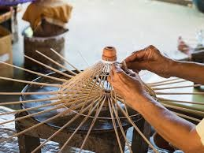

Food, Arts & Handicrafts
|

|
Dima Hasao is a beautiful hill district of Assam known for its natural scenery,
cultural diversity, traditional lifestyle, delicious local food and handmade crafts. The food
and handicrafts of the district reflect the traditions, creativity, skills and everyday life of its
indigenous communities. The Dimasa, Zeme Naga, Hmar, Biate, Kuki, Karbi and other communities
have their own food habits, cooking methods, traditional textiles and handicraft practices. These cultural
traditions have been passed down from one generation to another and continue to form an important part
of the district's identity.The local food and handicrafts of Dima Hasao are closely connected with its natural
environment, agricultural activities and availability of local materials. Traditional cuisine makes use of rice,
vegetables, herbs and other locally available ingredients, while craftspeople use materials such as bamboo,
cane, cotton and other natural resources to create useful and decorative products. Together, food and handicrafts
contribute to the cultural heritage and tourism potential of Dima Hasao.
|
Traditional Food
Food is an important part of the culture and daily life of the people of Dima Hasao.
The traditional cuisine of the district reflects the diversity of its indigenous communities and their
relationship with the natural environment. Rice is a staple food for many households and is commonly
eaten with vegetables, fish, meat and other locally available ingredients.Traditional meals often use fresh
seasonal produce and ingredients obtained from local farms and markets. Different communities have their
own recipes, cooking methods and food preferences. These differences make the food culture of Dima Hasao
diverse and interesting. Traditional meals are also important during festivals, weddings, family gatherings and
other social occasions, when food is shared among relatives, friends and community members.
|

|
Arts and Weaving
Handicrafts are an important part of the cultural and economic
life of Dima Hasao. The district's indigenous communities have developed
various traditional skills for making useful household products, decorative
items, textiles and other handmade objects. These crafts reflect creativity,
patience, practical knowledge and the artistic traditions of local people.
Traditional handicrafts are often made using materials available in the
surrounding environment. Bamboo, cane, cotton and other locally available
resources are used in different forms of craft production. The techniques and
designs are learned through family traditions, observation and practical experience.
Handicrafts are important because they preserve indigenous knowledge and provide
opportunities for people to earn a livelihood. They also help visitors understand the
skills and cultural traditions of the communities living in Dima Hasao.
Bamboo and Cane Handicrafts
Bamboo and cane are useful natural materials in many parts of Northeast India,
including Dima Hasao. Local craftspeople use these materials to create a variety of
household and agricultural products. Depending on local traditions and skills, these
may include baskets, mats, containers, carrying items and other useful objects.
The preparation of bamboo and cane products requires skill in selecting materials,
cutting, shaping and weaving them into suitable forms. Traditional artisans often
develop these skills over many years, learning from experienced family members
and community craftspeople.Bamboo and cane crafts are valued for their usefulness,
light weight and connection with local traditions. Because these materials can be obtained
from renewable plant resources when managed responsibly, such crafts can also support sustainable
local production.Promoting bamboo and cane products through exhibitions, local markets and tourism-related
businesses can help artisans reach more customers. Responsible harvesting and proper resource management
are important for protecting the environment and maintaining a long-term supply of raw materials.
Traditional Art
Traditional art in Dima Hasao can be seen in clothing,
ornaments, weaving patterns, bamboo crafts and other
handmade products. These artistic traditions are passed
from one generation to another.The traditional food, arts and handicrafts
of Dima Hasao represent the cultural diversity of the district and add
great value to its tourism.